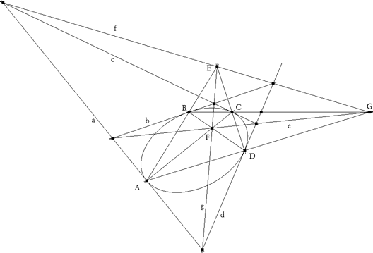
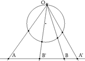
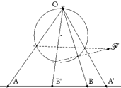
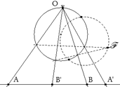
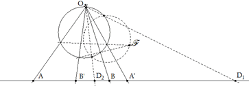
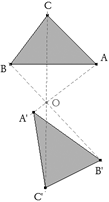
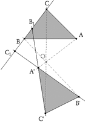
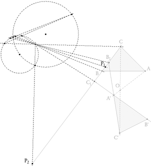
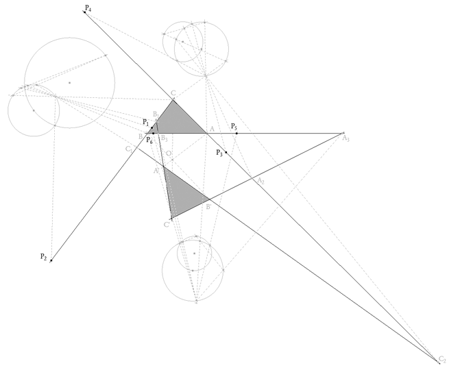
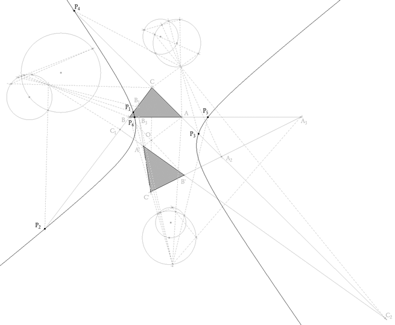

De investigación . Propuesto por José María Pedret. Ingeniero naval. (Esplugues de Llobregat, Barcelona)
Un problema muy atractivo es el recíproco del 315 y que desde aquí lo propongo a RICARDO BARROSO por si tiene a bien el publicarlo Problema 320 "Dados dos triángulos perspectivos ABC y A'B'C', construir (si existe) la cónica respecto a la que son recíprocos (o correlativos)." Pedret, J.M. (2006) Comunicación personal. Solución de José María Pedret, Ingeniero Naval. Esplugues de Llobregat (Barcelona). (1 de junio de 2006) |
|
PRELIMINARES |
|
Este ejercicio puede atacarse desde varios puntos de vista. Podríamos determinar la correlación que vincula a los dos triángulos, ver que es una polaridad y determinar el lugar geométrico de los putos que se hallan sobre sus propias polares. El camino que nosotros usaremos es otro, aunque estrechamente vinculado con el descrito. Necesitaremos un teorema debido a Desargues y también necesitaremos saber construir los puntos dobles de una involución. DESARGUES - M. POUDRA pp. 192, 193
"... Or, en une quelconque transversale NG, d'une quelconque ordonnance de droites FH, FO, chacune des couples de points N,G; Z,H; A,R qu'y donnent les trois buts d'ordonnées A, Z, N et leurs transversales TGV, MHL, ERD sont chacune une des trois couples de nœuds en involution d'un arbre dont la souche est conséquemment donnée de position ..." Para nuestro problema, nosotros lo redactaremos como:
" En toda línea recta hay un infinito número de pares de puntos conjugados entre sí respecto a una cónica dada,
y dichos pares de puntos están en involución"
 figura 1 Sea el punto G, B y C (ver figura) y consideremos el punto A desplazándose sobre la cónica; entonces las rectas BA y BC de los haces B* y C* son homográficos (CHASLES-STEINER); entonces los puntos E, F en que estas rectas cortan a la polar g del punto G son homográficos (h(E)=F). Pero la polar de E pasa por F (h(E)=F y la polar de F pasa por E h(F)=E; es decir, E y F son conjugados respecto a la cónica y por lo tanto están en involución (hºh(E)=h(F)=E). |
|
LOS PUNTOS DOBLES DE UNA INVOLUCIÓN
 figura 2 Primero desde un punto O sobre un círculo cualquiera, proyectamos la involución sobre el círculo.
 figura 3
Segundo hallamos el punto de Frégier F de la involución (intersección de las rectas que unen un punto con su homólogo en una involución del círculo).
 figura 4
Tercero como para cada involución su punto de Frégier es fijo, los puntos dobles de la involución del círculo estarán donde un punto se superpone a su homólogo y por tanto la recta que los une al punto de Frégier es la tangente desde el punto de Frégier al círculo. Si el punto de Frégier es exterior al círculo, trazamos desde él las tangentes al círculo.
 figura 5
Cuarto proyectamos los puntos de contacto desde el círculo a la recta. |
|
SOLUCIÓN |
|
|
 figura 6 Dibujamos dos triángulos perspectivos cualesquiera ABC y A'B'C'. Su centro de perspectiva es O.
 figura 7 Tomamos un de los lados, por ejemplo BC; BC corta a C'A' en B1 y a A'B' en C1. B1 y C1 son conjugados de B y C respectivamente. Los pares B, B1 y C, C1 están en involución (DESARGUES) y como los puntos de la cónica son los puntos donde cada punto coincide con su polar (tangente en el punto a la cónica), los puntos de la cónica son los puntos dobles de la involución mencionada.
 figura 8 Trazamos los puntos dobles de la involución definida sobre el lado BC y obtenemos los puntos P1 y P2 que son de la cónica.
 figura 9 Repetimos la operación para los lados CA y AB y obtenemos, respectivamente, los puntos P3, P4 y P5, P6
 figura 10 Trazamos la cónica por los puntos P1, P2, P3, P4 y P5. Si todo es correcto, P6 sirve de comprobación. También sería bueno obtener las involuciones sobre B'C', C'A' y A'B'.
Se puede comprobar que los triángulos son recíprocos (o correlativos) respecto la cónica. |